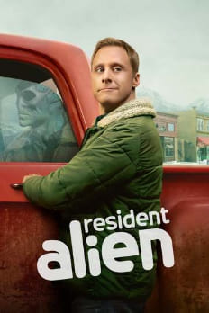
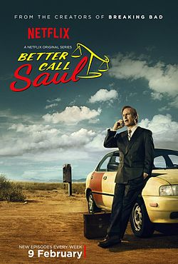
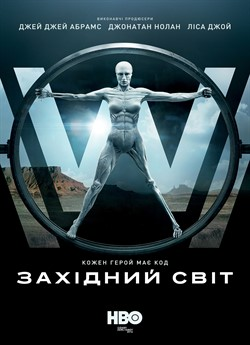
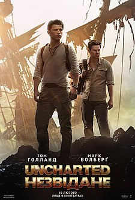
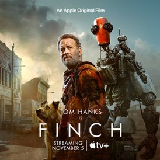

До перегляду:
Серіали:
- Постоялець з космосу
- 
- Опис:Головний герой серіалу — іншопланетянин, надісланий на Землю, щоб знищити людство і
підготувати планету до заселення його побратимами. Він ховається під личиною доктора Гаррі
Вандершпігеля,
що живе на самоті недалеко від маленького містечка в американському штаті Колорадо. Живучи в новому тілі, прибулець починає сумніватися у виправданості своєї місії.
- Краще подзвоніть Солу
- 
- Опис:Події серіалу одночасно розгортаються у декількох часових проміжках. Глядач
побачить, як саме змінилося життя Сола Ґудмена і одночасно режисер розповість історію становлення
Джиммі Мак-Ґілла (Сола Ґудмена)
як адвоката за шість років до його появи в серіалі «Пуститися берега»
- Край «Дикий Захід»
- 
- Опис:За сюжетом події серіалу відбуваються у футуристичному парку атракціонів «Край
„Дикий Захід“», де в ролі мешканців Дикого Заходу перебувають людиноподібні роботи.
Парк існує, щоб справжні люди могли в ньому за гроші розважатися — від пошуків пригод до вбивств і розпусти. Роботи не можуть зашкодити людині та не знають, що вони не справжні люди, поки перебувають у ролі.
Наприкінці кожного дня їхня пам'ять затирається, проте власники парку плетуть між собою численні інтриги в гонитві за прибутками та власними цілями. Зрештою в системі відбувається збій і частина
роботів здобуває свободу самим обирати власну долю
- Хлопаки
-

- Опис:американський вебсеріал про супергероїв, заснований на однойменному коміксі Гарта
Енніса та Даріка Робертсона. Він розповідає про однойменний загін, який бореться з надпотужними
особами,
що зловживають своїми здібностями.
-
Фільми:
- Uncharted: Незвідане
- 
- Опис:Двоє хлопчиків, вихованців католицького сирітського притулку в Бостоні — Нейтан
Дрейк та його старший брат Сем, захоплюються історіями про пошуки скарбів. Зважаючи на своє прізвище,
вони вирішують, що є нащадками Френсіса Дрейка.
Вони проникають на виставку, де зберігається карта з першого навколосвітнього плавання Магеллана. Сем розповідає Нейтану що насправді Магеллан вирушив у навколосвітню подорож заради золота, і не проплив її до кінця. Сем наважується викрасти
карту аби розбагатіти, проте братів схоплює поліція. Сем, щоб не потрапити до в'язниці, тікає, перед цим попрощавшись із братом, і обіцяє колись повернутися.
- «Фінч»
- 
- Опис:Хворий винахідник, остання людина на Землі, створює андроїда, щоб утримати себе та свою собаку та поїхати у подорож по країні
Як у кіно: що (і навіщо) їсти під час перегляду різних фільмів
Гарячі фільми про любов
Снеки: оливки, персики, сир
Біле вино та устриці – певно, перше, що спадає на думку при згадці про їжу закоханих. Утім,
кіноромантики
впевнено руйнують цей стереотип, показуючи нам, що за найпалкішими екранними романами стоїть
палка і терпка
їжа. За переглядом «Вікі Крістіни Барселони» обов’язково зверніть увагу, як, подорожуючи по Ов’єдо
та
Барселоні, іспанець Хуан Антоніо (Хав’єр Бардем) зваблює головних героїнь інтелектуальними бесідами та
місцевими закусками – сирами, виноградом та гострим чилі.
Після такого гедоністичного кіно треба одразу вмикати «Мрійників» Бернардо Бертолуччі та нарізати шматочки
найпахучішого сиру.
Там трійка студентів створює свій оазис безтурботного життя та кохання без будь-яких
обмежень за вином та оливками в розпал паризьких демонстрацій 1968 року.
А ось де вдасться вдихнути на
повні груди, то це в сонячній Кремі – італійському містечку на півночі, де відбувається дія «Назви мене своїм
ім’ям». Олівер та Еліо тут
насолоджуються курортним романом, персиками, сирами та свіжою випічкою. Саме так
смакує перша закоханість.
Бойовий екшн
Снеки: горішки, картопля фрі, ковбаснеки
У 2015 році журнал американської медичної асоціації Internal Medicine опублікував результат цікавого
дослідження – люди схильні поїдати більше снеків під час перегляду бойовиків та картин, сповнених екшену.
По-справжньому енергійне кіно справді здатне знесилити
глядача, зануреного в сюжет. Отже, поки Брюс
Вілліс
бігає босоніж по битому склу, не відставайте від героя і пригощайтесь поживними горішками, як
реверанс у
бік
прокатників-локалізаторів, що в далеких 90-х переклали для нас назву Die Hard як «Міцний горішок».
А якщо турбулентної подорожі в Нью-Йорк Джона Маклейна вам не вистачило, приготуйте поживніші ковбаски та
хот-доги, вмикайте «Ідентифікацію Борна» і нервово стежте за тим, як колишній агент ЦРУ йде проти системи
задля
кращого життя, розправляючись із ворогами. Навіть супергероям треба запасатися енергією, тому картопля фрі
та
«Месники» – чудова комбінація. Особливо якщо дочекатися сцени після титрів, де команда мовчки обідає
бургерами
та картоплею після важкого бою з інопланетянами. Якщо супергероям можна джанк-фуд, то й нам також.
Історичні видовища
Снеки: хлібні пампушки, ковбаснеки, курятина
«Гра престолів» – хоч і не зовсім історичний жанр, втім, будуючи всесвіт фентезі авторства
Джорджа Р. Р.
Мартіна, творці серіалу зверталися до історичних фактів при створенні
раціону героїв. Кров’яні пироги та
ковбаси ірландців перейшли до дотракійців, іспанський делікатес «куропатки в меді»
став стравою
Королівської
Гавані, а хлібні пампушки французів тут віддали Хайгардену.
Тим часом «Макбет» Джастіна Курзеля – приклад кельтсько-шотландської кухні, де
монархам подавали овечі
сири, баранину та конину. У пошуках історичної кухні також
вмикайте «Гладіатора» Рідлі Скотта.
Непереможному Максимусу в цьому кіно, м’яко кажучи, не до їжі, а ось оточення
імператора Коммода з радістю
ласує традиційними для Рима фруктами, вином, різноманітними м’ясними ковбасками та стейками з кабанів.
«Хліба і видовищ», –
писав давньоримський поет-сатирик Ювенал, і хто ми такі, аби з ним сперечатись.